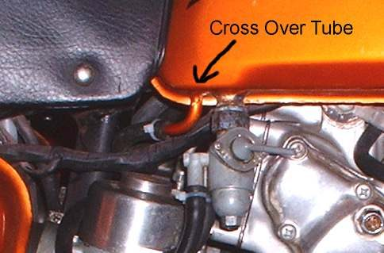
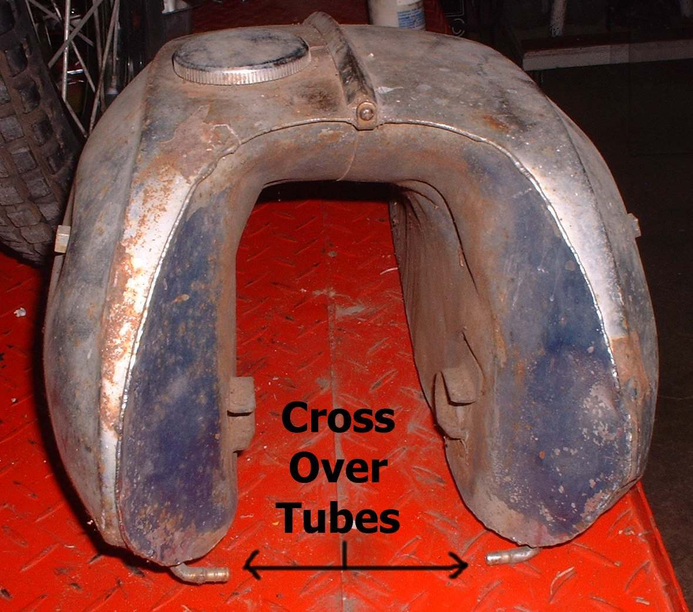

Removing the tank gives access to the frame, wiring and engine top, and is needed to repair or clean a tank. Fuel, fumes and a heavy, awkward part make this a job to do slowly. Layouts vary: some tanks sit under the seat, some have two halves joined by a crossover tube, and some are fed by an electric pump.
Safety
- Work outdoors or in a space with good air. No smoking or flames. Keep a fire extinguisher at hand.
- Disconnect the battery earth lead before you work on a tank with a pump or fuel gauge.
- Fuel is toxic on skin. Wear gloves and wipe spills at once.
You need
- Containers for the fuel, a funnel and clean rags.
- Spanners for the tank bolts and clamps. The bike manual shows the order for your model.
Steps
- Turn the fuel tap to OFF. Run the tank as empty as is practical by using the fuel, or drain it into a container.
- If the bike has a crossover tube between two tank halves, empty the tank fully first. Fuel in the second half cannot drain out through the tap.
- Remove the seat or side covers to reach the tank mounts.
- Pull off the fuel line from the tap or pump. Plug the end of the line, or fold it and clamp it. Disconnect any vacuum hose, vent hose and level sender plug.
- Take out the front and rear mounting bolts. Lift the tank back and up with a helper if it is heavy.
- Put the tank on a bench, with the filler cap on, away from heat. Store open ended hoses with a cap.
- Refit in reverse. Check that rubber mounts and washers are in place and that the vent hose is not kinked or trapped.
- Open the tap and check every joint for wet fuel before you start the engine.
Check your work
- No wet marks on lines, tap and joints after five minutes with the tap on.
- The vent hose is clear and runs out of the way of heat.
If it did not fix the problem
- Tank leaks: Assess and repair a leaking fuel tank.
- Engine stops after a short ride with the tank refitted: Check the fuel tank vent.